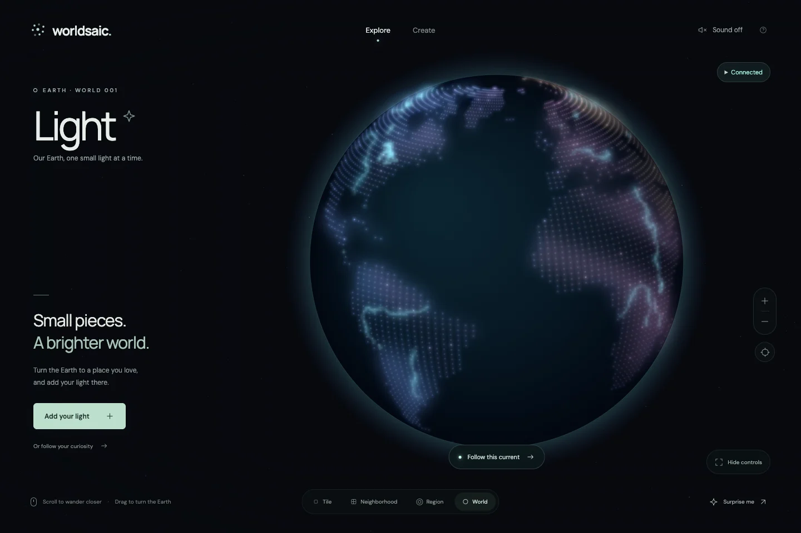
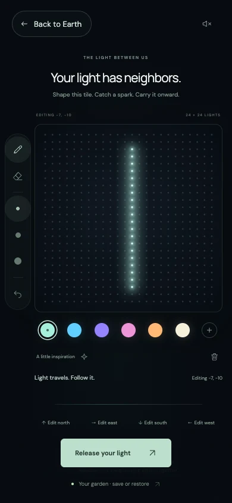

Shared-world art game · Live
A shared world, one light at a time.
Worldsaic is a relaxing art game where Earth becomes a shared canvas. Draw with light, connect with neighboring creations, and follow real rivers from a glowing globe down to a single tile. Play in your browser, open to everyone.

The Game Loop
The invitation is simple: find a place, leave a light, and see where it leads. Exploration and making feed each other, with real rivers and other people's artwork giving each visit a different route.
-
Wander
Find a place on Earth
Turn the globe, follow a named river, or drift closer to a light. World, region, neighborhood, and tile are scales along the same camera journey.
-
Draw
Make a small luminous canvas
Paint a 24 × 24 tile with color, brightness, brush size, and light behavior. Drafts stay in the browser while the player experiments.
-
Connect
Leave room for a neighbor
Move into adjacent tiles and catch color from their facing edges. Review the edited neighbors together, then release the group into the shared world.
-
Follow
See the light travel
A released tile blooms. When its lit edges meet water or neighboring light, a spark follows that connection and invites the player onward.
The next creation can begin where the last journey ends. Open places keep their land and water until someone adds a light; every released artwork has a place in the same persistent world.
Designed for a Quiet Visit

Game interaction, globe and tile rendering, drawing tools, spatial sound, shared-world persistence, and deployment.
Phone exploration uses pinch and drag, with controls that recede while idle. Touch, pointer, and keyboard paths stay available. Reduced motion stops ambient movement and automatic journeys.
Sound starts muted. Native Web Audio places drawing around the tile's center, blending procedural glass and water with recorded pencil and brush textures.
The shared world, tile links, anonymous presence, and garden export/import are implemented. Accounts, identity recovery, and simultaneous editing within a tile remain outside the current release.
The Foundation
A browser game with a durable shared world
React and TypeScript own the interface. Canvas 2D draws the globe, its gradual transition into a flat canvas, and the individual lights. Cached overview artwork gives way to detailed pegs as the camera moves closer.
Bundled Natural Earth geography supplies the land, rivers, and lakes. The same river traces guide exploration and connect light across tiles. A Cloudflare Worker routes the shared-world API to one SQLite-backed Durable Object; the local server uses the same world rules.
React, Canvas 2D
Native Web Audio
Shared TypeScript logic
Browser local storage
Durable Object, SQLite
Protecting the Player's Work
-
Release
A deliberate, atomic saveDrafts remain local until the player confirms a release. The server checks ownership and revision for every tile in the group; a conflict rejects the entire batch and preserves the drafts. Other browsers receive confirmed changes through ETag polling.
-
Recovery
Retries preserve the same intentionA failed request keeps the release dialog and artwork available. Retrying the same request after a lost response acknowledges the original save without writing twice. Garden exports carry local artwork between browsers; daily R2 snapshots and point-in-time restore protect the shared world.
-
Verification
Check the shared behavior in separate browsersIsolated browser checks exercise publication between contributors, ownership conflicts, failed saves, lost responses, restart and reconnect, and garden transfer. A separate local Worker check runs the shared-world contract against the Durable Object with temporary state.
What This Demonstrates
Worldsaic brings game feel and application engineering together: a continuous camera, tactile drawing, spatial sound, and a shared world that remembers contributions. The technical foundation supports a simple moment for the player: make something small and watch it become part of something larger.
The shared world is live and open to everyone. It brings the creation and exploration loop, durable publication, and recovery behavior into a browser game that people can play together.